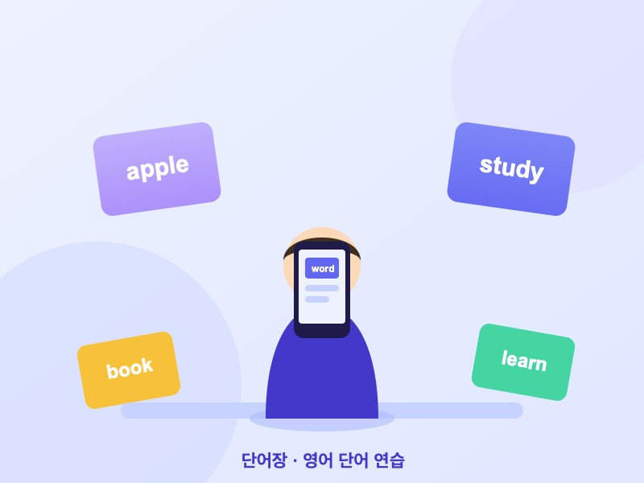

서비스 소개
나만의 영어 단어장
나에게 필요한 단어만 골라 담고, 반복 학습으로 오래 기억합니다.
이용 방법을 확인하고 나만의 단어장을 만들어 보세요.

주요 기능
-
빠른 암기
간격 반복 학습으로 짧은 시간에 효율적으로 외웁니다.
-
맞춤형 단어장
관심 분야와 수준에 맞는 단어만 골라 학습합니다.
-
학습 기록 관리
외운 단어와 복습 일정을 한눈에 확인합니다.
이용 방법
- 학습할 단어를 검색하거나 목록에서 추가합니다.
- 예문과 발음을 들으며 단어를 학습합니다.
- 퀴즈로 복습하고 암기 상태를 확인합니다.
소식 받기
매일 추천 단어와 학습 팁을 이메일로 받아보세요.